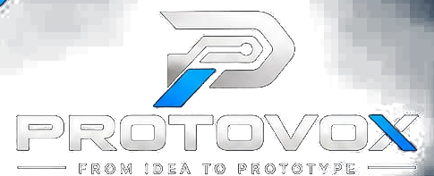

KIT / 001
ESP32
Wi-Fi + BLE
IoT Starter Kit
ESP32 · sensors · breadboard · jumper wires
₹1,499 demo price

From the first sketch to a working prototype, ProtoVox brings projects, components, kits, technical help and opportunities into one place.
const idea = "yours";
idea.status = "BUILDING";ESP32 · PYTHON · PCB · CADThese are examples of what we can help you build. Submit your own idea and we can map the required components, kit and technical steps.
A connected field system that detects environmental changes and sends real-time alerts before a situation escalates.
A practical path from “what if?” to “it works.”
For curious minds who would rather make it real.
One connected workflow to help you make progress, even when you're not sure what to do next.
Describe the problem you want to solve. You don't need a perfect plan — just a starting point.
Curated starter kits with a clear component list, a project direction and room to experiment.
ESP32 · sensors · breadboard · jumper wires
Arduino · motor driver · chassis · sensors
ESP32 · light sensors · servo · power monitor
ⓘ Prices and kits are illustrative demo content. No orders or payments are processed yet.
Wrong sensor readings. A circuit that won't cooperate. Code that refuses to compile. Tell us where you're stuck.
pv@builder:~$ diagnose --project
Checking common blockers...
Ready when you are_
Hands-on learning tracks for engineers and future innovators. Choose your domain and tell us what you want to learn, build and achieve.
ⓘ Internship requests are emailed as a draft for you to review and send. Tracks are not confirmed vacancies or placement guarantees.
Don't wait until you know everything. Start with one question, one component, one prototype.
I'm Vox. What would you like to do today?
Built to help you go from idea to prototype.